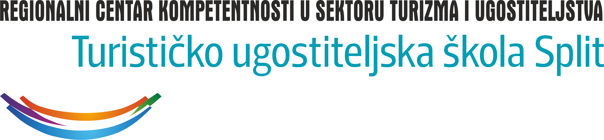
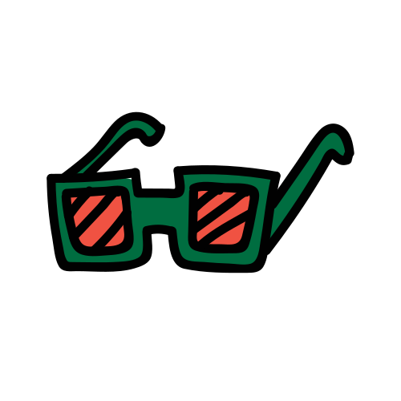

<<<<<<< Updated upstream “Leti ko lišće što vir ga vije,— Tin Ujević
za let si, dušo stvorena.
======= “Leti ko lišće što vir ga vije, za
let si, dušo stvorena.
>>>>>>> Stashed changes Za zemlju nije, za pokoj nije
cvijet što nema korijena.”
Marjan na dlanu
Lorem inventore unde libero dolor nobis alias beatae maxime, dolorum necessitatibus eos repudiandae.Projektni partneri
Srce Marjana
Kulturno povijesni Marjan
Prirodni Marjan
Sportsko rekreacijski Marjan
